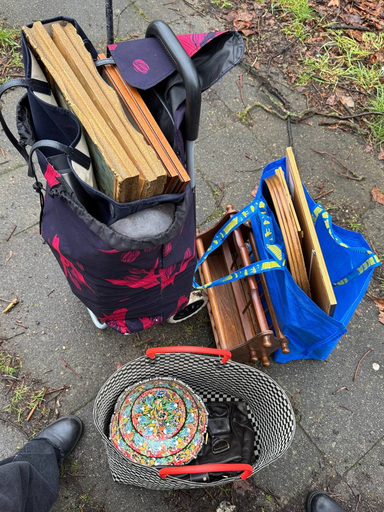
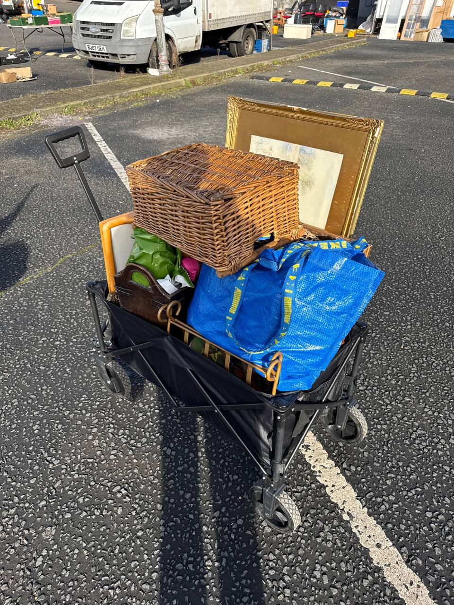

Last updated: 1 May 2026
UK Car Boot Sales Near Me: 2026 Sunday Calendar
The UK car boot scene runs year-round at hundreds of venues, and most of them are on Sunday morning. If you’re looking for one near you this weekend, this is a 2026 calendar of the largest and most reliable sales in England, organised by region, with verified hours and fees from each operator’s own website.
We’ve cross-checked every entry against the venue’s official site or Facebook page. Where a popular search query (like “Chertsey car boot”) didn’t match an actually-running 2026 venue, we’ve pointed you at the closest active alternative instead of inventing one.
“We’ve done car boots in Surrey, North London, and Suffolk. The pattern is always the same — arrive at gate-open, walk fast, buy first round, haggle on round two. This is our verified 2026 list.” — Oleksandr Prudnikov, FlipperHelper developer and active reseller
How to find a car boot sale near you this Sunday
The two best UK car boot calendar sites are findcarboot.co.uk and carbootjunction.com. Findcarboot has structured per-listing data (hours, season, fees), CarBootJunction has been running since 2004 and remains the broadest directory.
Always check the specific venue’s Facebook page Saturday afternoon for that weekend’s status. Grass-pitch boots cancel on heavy rain — one r/FlippingUK reseller put it this way: “Pretty handy esp when sometimes car boots get cancelled the day before due to weather and they post on Facebook to let people know.”
The biggest UK car boot sales by region (2026)
London & Greater London
Capital Car Boot — Pimlico
- Day & time: Every Sunday, 10:15am–2:30pm (early bird from 10:00am)
- Location: Pimlico Academy, Lupus Street (Chichester Street entrance), SW1V 3AT
- Buyer entry: Online early-bird £7 (10am); door 10:15–11am £7; 11–11:30am £5; 11:30am–2:30pm £1; under-16 free
- Seller pitch: Walk-in outdoor £10 (£12 cash); indoor with table £25; cars from £15
- Official: capitalcarboot.com
The London Car Boot Co — Kilburn (Saturday) & Stoke Newington (Sat & Sun)
- Kilburn: Saturdays 7:30am–2pm, St Augustine’s School, NW6 5SN. Buyer entry £5 early bird, dropping to £1 after 10:30am
- Stoke Newington: Saturdays AND Sundays 7:30am–2pm, Princess May School, N16 8DF. Buyer entry £3 before 9am, 50p after. Indoor backup on rain
- Official: londoncarboot.com
Battersea Boot
- Sunday afternoons 1:30pm–5pm at Harris Academy, 401 Battersea Park Road, SW11 5AP. Running since 1999. The afternoon timing is unique — useful if you’ve already done a morning boot
Tottenham car boot — Thursdays only, not Sundays
- Day & time: Every Thursday 7am–1pm, year round (closed Christmas/New Year)
- Location: Tottenham Community Sports Centre, N17 8AD
- Scale: 70 sellers (operator stated). Established 1995. Pitches £15, pre-booked only
- Note: Hardstanding car park — runs whatever the weather. There is no Sunday Tottenham car boot at White Hart Lane — people often confuse this with a quarterly community Sunday event run separately
- Official: countrysidepromotions.co.uk
Raynes Park / Wimbledon car boot
- Day & time: Sundays from 12 April 2026, sellers from 7am, buyers from 8am
- Location: Prince Georges Playing Fields, Bushy Road, Raynes Park, SW20 9EB
- Buyer entry: £1
- Seller pitch: Walk-in £7; cars £13; small vans £15; vans £20
- Antique Fair Sundays (09:30 start): 3 May, 21 Jun, 19 Jul, 16 Aug 2026
- Note: Site is grass — check website for weather cancellations. Raynes Park 3 May 2026 was cancelled at the time of writing
- Official: raynesparkcarbootsale.co.uk
South East
Denham Giant Car Boot (Buckinghamshire)
- Day & time: Every Saturday, March–winter. Sellers from 7am, buyers from 8am, gates lock 2pm
- Location: Main A40, Denham Roundabout (corner of Denham Court Drive), UB9 5PG
- Buyer entry: £3 before 10am, £2 10am–noon, £1 from noon. Under-12s free
- Seller pitch: Cars from £15, small vans £25, large vans £35, trailers +£5
- Note: Self-described “busiest in Greater London.” Weather permitting — phone 07947 121336 if in doubt
- Official: giantcarboot.co.uk
Apps Court Farm (Walton-on-Thames, Surrey) — the “Chertsey” alternative
- Day & time: Every Sunday, April–October
- Location: Apps Court Farm, Walton-on-Thames, KT12 2PF
- Note: Often what people mean when they search “Chertsey car boot” — we couldn’t find a Chertsey-specific car boot still operating in 2026
- Official: appscourtfarm.com/carboot
Hook Road Arena (Epsom, Surrey)
- Day & time: Sundays
- Location: Hook Road, Epsom, KT19 8RT
- Note: Self-described as “The Daddy of Car Boot Sales”
- Official: hookcarbootsale.com
Ford Airfield (West Sussex)
- Day & time: Every Sunday all year. Gates 6am for sellers, 9am for buyers
- Location: Ford Airfield, Arundel, BN18 0HY
- Note: Operator’s tagline: “Open every week of the year whatever the weather”
- Official: fordairfieldmarket.co.uk
East
Dunton Boot Sale (Essex)
- Day & time: Sundays + Wednesdays + Bank Holidays. Sun gates 5:30am, packing 1–2pm. Wed gates 6am, packing 12–1pm
- Location: Dunton Road, Dunton Wayletts, Billericay, CM12 9TZ
- Seller pitch: Sun/BH cars £14, vans up to £25; Wed cheaper at £10/£15/£20
- Note: Established 1993. Weather permitting
- Official: duntonbootsale.com
Stonham Barns (Suffolk)
- Day & time: Every Sunday + Bank Holiday Mondays, March–November, 7am–1pm. Plus Thursdays in summer
- Location: Stonham Barns Park, Pettaugh Road, Stonham Aspal, IP14 6AT
- Buyer entry: Free (parking included)
- Seller pitch: Cars from £7
- Note: One of the largest in East Anglia. Phone 07817 539168 to confirm pitch fees ahead of time
- Official: stonhambarns.co.uk
Arminghall (Norfolk)
- Day & time: Sundays + Wednesdays + Bank Holiday Mondays from 22 March 2026
- Location: Old Stoke Road, Norwich, NR14 8SQ
- Scale: Up to 600 sellers, dubbed “Norfolk’s biggest”
- Seller pitch: Cars / small vans £10
- Official: arminghallcarboot.co.uk
Fordham (Cambridgeshire)
- Day & time: Alternate Sundays, 12 April–11 October 2026
- Location: Market Field, Collins Hill, Fordham, CB7 5PD
- Buyer entry: Adults £1, under-16 free. Seller cars £10
- Note: One of the largest and longest-running in East Anglia
- Official: fordhamcarbootsales.co.uk
Sunbury at Kempton Park — not technically a car boot
Sunbury Antiques Market at Kempton Park Racecourse comes up constantly when people search “car boot near me” in West London — but it’s an antiques market on Tuesdays, not a Sunday car boot. It’s worth knowing about because it’s genuinely huge:
- 2026 dates: Second & last Tuesday of every month. Confirmed: 28 Apr, 12 May, 26 May, 9 Jun, 30 Jun, 14 Jul, 28 Jul, 11 Aug, 25 Aug, 8 Sep, 29 Sep, 13 Oct, 27 Oct, 10 Nov, 24 Nov, 8 Dec 2026
- Hours: 6:30am–2pm. £5 early entry 6:30–8am, free thereafter
- Location: Kempton Park Racecourse, Staines Road East, Sunbury-on-Thames, TW16 5AQ
- Scale: 700+ stalls indoor + outdoor
- Outside ULEZ/LEZ: free parking, cash + contactless on the gate
- Official: sunburyantiques.com/kempton
It’s the closest London-area equivalent to the better-known European antiques fairs, and the early-entry slot is genuinely worth the £5 if you’re reselling.
What time to arrive at a UK car boot
Be there when the gates open. A regular reseller on r/AskUK described the morning rhythm: “Be prepared for the pushy dealers trying to root through your actual car boot at 7am before you’ve even had time to set anything up.” That’s when the best stock leaves — before sellers have unpacked.
By 10am most casual buyers have done their walk-through. By midday the trade dealers are already in their next venue. If you’re selling, the same logic applies in reverse — one r/AskUK first-timer wrote: “I did my first car boot the other week just to get rid of random stuff (a lot of child stuff like soft plates, pots etc) and surprisingly walked away with about £100.”
Bring cash — and small notes
Most stalls are still cash only. Bring small notes (£1, £2, £5) because sellers don’t carry change at 7am. Some London boots have an ATM near the gate, but the queues are bad and the fees usually £2.
Cash also unlocks haggling. One r/AskUK comment captured it well: “Aside from car purchases, a car boot sale, and via an estate agent, white Brits don’t seem to really like to haggle.” Car boots are the exception — vendors expect a polite “is that your best price?” on anything over £5.
What to look for if you’re reselling
Different boots have different stock profiles. Hardstanding venues with paid pitches lean professional — ex-shop stock, returns, repackaged goods. Grass venues with cheap pitches lean particulier — people clearing attics. The bargains-for-resale are mostly in the second category.
From regular UK reseller threads on r/FlippingUK and r/AskUK, the consistently-flippable categories are:
- Vintage clothing & designer brands — Levi’s, Burberry, Barbour, Harris Tweed. Sells on Vinted/Depop
- British china & pottery — Royal Doulton, Moorcroft, Beswick, Wedgwood, Royal Crown Derby. eBay still strong on these
- Vintage furniture — if you have a van Ercol, G Plan, Parker Knoll. Margins are best on smaller pieces (stools, side tables)
- Vinyl records, vintage cameras, watches, vintage Lego/Star Wars — small, easy to transport, deep collector market
- Books — first editions and signed copies turn up surprisingly often
If you’re tracking your finds for resale, log purchases at the stall with prices and category — we use FlipperHelper for this; works offline because car boot fields rarely have signal.


Weather, cancellations & bad-day boots
Always check Facebook before driving. Most grass-pitch boots cancel by Saturday evening if the ground is too wet, and the operators post on their Facebook page. Hardstanding venues (Tottenham, Capital Car Boot Pimlico, the London Car Boot Co indoor at Stoke Newington) run regardless — useful in winter and rainy weeks.
One reseller on r/FlippingUK noted what bad-weather boots actually look like: “The only sellers turning up are trade — the ones with 100 mobile phones or selling you bargain toilet rolls, or the man trying to sell the same 20 ‘antiques’ as the last four years he’s turned up.” If you’re after specific stock, this can actually work in your favour — less competition.
Indoor “real life Vinted” boot sales — the 2026 trend
Several event spaces around the country now run indoor car boot sales marketed as “real life Vinted” — smaller, curated, popular with younger sellers. They’re not on the traditional aggregator sites yet; check Eventbrite and local Facebook groups. One r/AskUK first-timer described one: “Hosted in a local event space.” Pitches are usually £15–£25 with a table provided.
Frequently asked questions
What’s the biggest car boot sale in the UK?
Several venues claim the title. Denham Giant Car Boot (UB9 5PG) is the largest near London with hundreds of pitches every Saturday. Arminghall in Norfolk attracts up to 600 sellers. Stonham Barns in Suffolk is the biggest in East Anglia. None publish exact verified numbers, so “biggest” depends on whether you mean pitches, visitors, or land area.
Where is the biggest car boot sale near London?
Denham Giant Car Boot at UB9 5PG. Every Saturday from 7am, gates lock 2pm. Self-described as the busiest in Greater London. The Hook Road Arena in Epsom (KT19 8RT) is the largest in Surrey on Sundays.
What time should I arrive at a UK car boot sale?
Arrive when gates open — usually 7am for sellers and 8am for buyers. Trade dealers walk the rows the moment vans pull in, and the most flippable stock leaves before 9am. By 10am most casual buyers have already walked through. If you can pay the early-bird premium (typically £3–£7), it’s worth it for resale sourcing.
Is the Sunbury car boot really a car boot?
No — Sunbury Antiques Market at Kempton Park is an antiques market, not a car boot. It runs the second and last Tuesday of each month, 6:30am–2pm, with 700+ stalls. Free entry from 8am. Postcode TW16 5AQ. Treat it as a higher-quality, mid-week alternative.
Can I haggle at a UK car boot sale?
Yes. Cash gives you the best leverage. The norm is a polite “is that your best price?” or offering £4 on a £5 item. Bring small notes — sellers rarely have change for £20s before mid-morning.
Do car boot sales run when it rains?
Most are weather permitting. Grass-pitch venues cancel by Saturday evening if the ground is too wet — check the venue’s Facebook page before driving. Hardstanding venues like Tottenham and Capital Car Boot Pimlico run whatever the weather. On bad-weather days, only trade sellers turn up — useful if you’re after specific stock and want less buyer competition.
How much does it cost to sell at a UK car boot?
Pitch fees range from £7 (Stonham Barns) to £25 (Capital Car Boot Pimlico walk-in indoor with table). The typical Sunday boot charges £10–£15 for a car space and £15–£25 for a van. Fordham in Cambridgeshire is among the cheapest at £10 per car. Most operators charge extra for trailers or large vans.
What about Chertsey car boot?
We couldn’t find a Chertsey car boot still running in 2026. The closest active alternative is Apps Court Farm in Walton-on-Thames (KT12 2PF), every Sunday April–October. If you’ve confirmed Chertsey is running again, let us know and we’ll update.
Related reading
- Car Boot Sale Tips for UK Resellers — what to do once you’ve picked a boot
- Best French Brocantes 2026: UK Reseller Sourcing Calendar — if you want to upgrade from a UK Sunday to a French weekend
- Best Items to Resell in the UK — what sells well after you’ve sourced
- How to Track Reselling Profits — logging trip costs against item profit
Track your car boot finds with FlipperHelper
Free app for iOS and Android. Log every item at the stall in 3 seconds — price, photo, source, listing platform. Works offline because car boot fields don’t have signal. Multi-currency for when your next sourcing trip is across the Channel.
Download Free on the App StoreGet it Free on Google Play